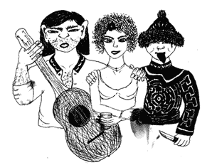

УШИ И ЯЗЫКИ
 После концерта на кызыльском стадионе Игорь Дулуш - организатор
"Устуу - Хурээ" - пригласил нас на фуршет в репетиционный подвал
старообрядческого хора "Актай". Нас было трое: Фалько, Катала и я - неосекс -
символ чааданской молодежи. Там уже собралась вся тувинская соль, красноярские
перцы из группы "Второе внимание" и местные староверы. Ведущие фестиваля -
героиновый зайчик Володя и телевизионщик Чомба - заправляли чабанским кругом.
Чабанский круг - это такая извращенная подстава, когда бухают не вместе, а по
очереди. Оттопыриться невозможно. Постоянная запара, что сказать. А тувинские уши
- это вам не московские. В почете сердечная искренность, этническое краснословие.
Первым из нас троих налили Фальковскому. Фальковский умный, но
стеснительный. Он произнес что-то невнятное и быстро выпил. Неожиданно
последовала реакция. Руководительница хора "Актай", русская женщина, обвинила нас
в левизне: "Какие-та вы ... левенькие, ребят". Непонятно, что она имела в виду. Возникла
перебранка. Каталкину налили. Он говорил, что мы такие же, только немного другие.
Но его не поняли. Чомба и Дулуш заволновались и налили мне. Я сказала, что буду
пить за природу, реки-Саяны, за романтичную тувинскую любовь и бухнула под
аплодисменты.
В какой-то момент у Фальковского в руках оказались гитара и
стакан. Его просили сыграть в качестве тоста. Последний раз Фальковский играл в
пионерском лагере на горне, потому отказался. Тогда гитару и стакан отдали
Каталкину. Каталкин стакан взял, а гитару поставил рядом. Чабанский круг замяли.
Началось движение.
Сперва меня поймал Олег Сырыглар - местный добрынин -
и запел про ночь, две свечи, бокалы, помаду, мармелад... Потом взял за руку, а я
смотрела в его круглейшее добрейшее лицо и пыталась понять, о чем же он говорит.
Вокруг пели хором горлом, били в бубны, дудели в дудки. Началось мелькание. Я
поднялась на улицу. Стою, курю. Вдруг из подвала выбегает телевизионщик Чомба и
заводит беседу о природе, заводе, страстной тувинской любви, подвигах, о своем
шраме у виска и обо мне. Потом он захотел целоваться.
В ту ночь я поняла,
что творческая тувинская интеллигенция дико любит попиздеть.